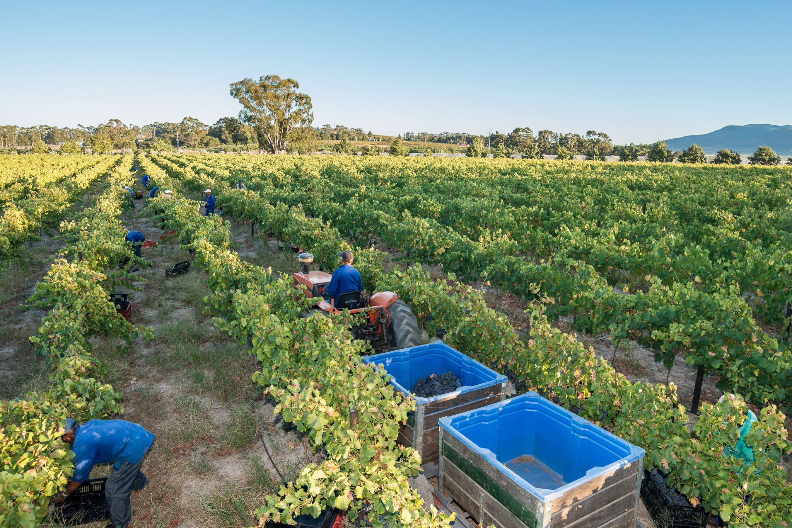
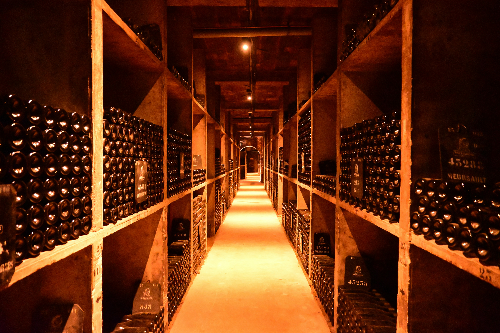
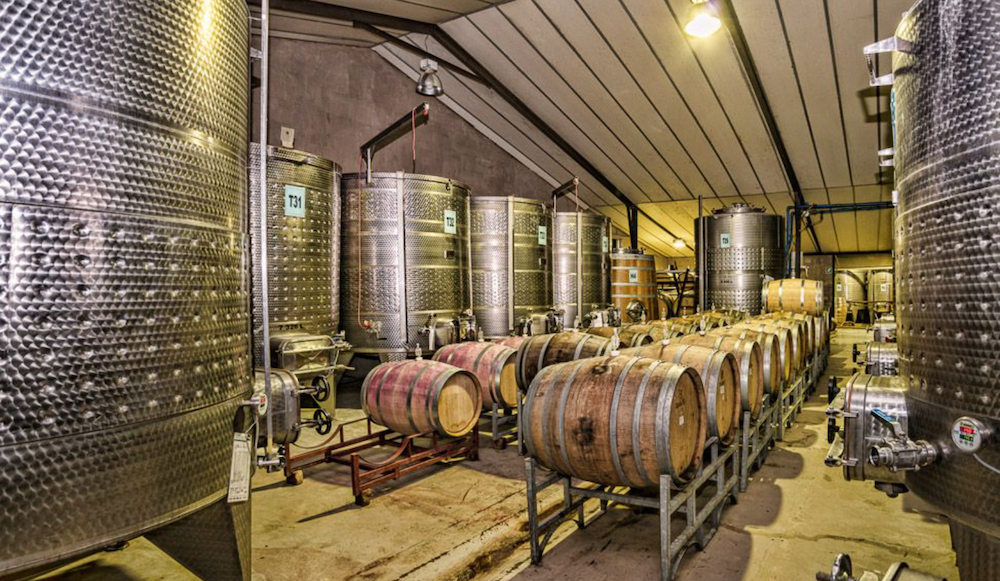
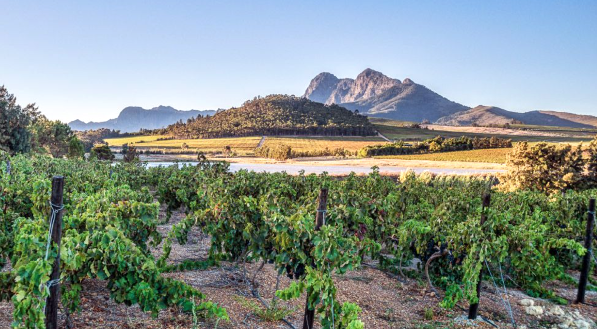
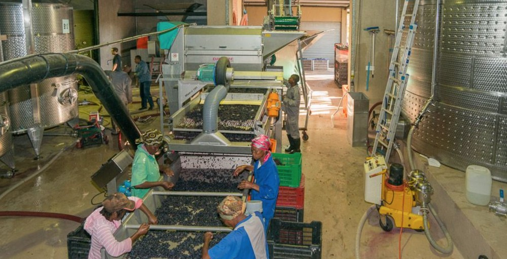
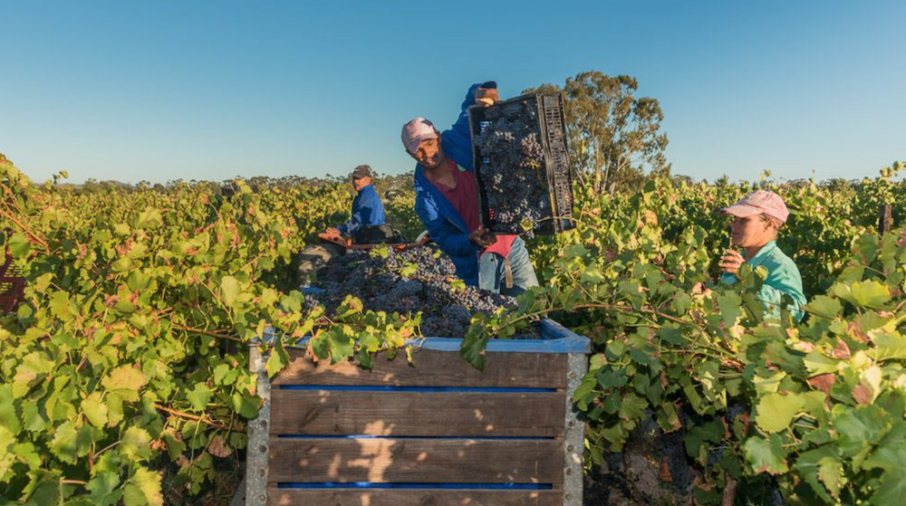

Two extraordinary South African terroirs. One unwavering commitment to craft. This is where every bottle of Lavo begins.
Lavo wines are born from a partnership with two exceptional South African estates, each chosen for the distinct character it brings to the range. Anura Vineyards, set against the foothills of the Simonsberg Mountains in the Western Cape, produces all of our red and white varietals.
Our Sparkling Brut finds its home at Orange River Cellars in the Northern Cape, where the sun-drenched banks of the Orange River yield grapes of remarkable freshness and vitality. Two terroirs, one vision: wines that speak honestly of the land they come from.
Positioned on the foothills of the Simonsberg Mountains, Anura Vineyards is owned and run by Tymen, Jenny and Lance Bouma. The estate boasts a wide variety of soils, slopes and microclimates, a canvas ideally suited to the handcrafted wines it produces. Passion for red wine runs deep here, with plantings of Mourvédre, Petit Verdot, Grenache, Pinot Noir, Sangiovese and Malbec alongside more classic, locally grown varietals. In the vineyards, Tymen strives to utilise practices that best suit each varietal: canopy management, yield control, trellising and irrigation are all considered with care. It is this attentiveness to the vine that sets the foundation for every Lavo red and white.

Deep in the Green Kalahari, where the Orange River winds through sun-baked red-sand landscapes, Orange River Cellars has been crafting wines of character since 1965. The Northern Cape's extreme climate: long, intensely sunny days and cold desert nights, produces grapes with a natural exuberance and vivacity that lend themselves perfectly to sparkling wine. It is here that the Lavo Sparkling Brut is born: fresh, celebratory, and distinctly South African in spirit.



